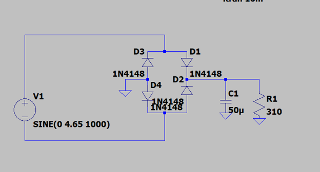
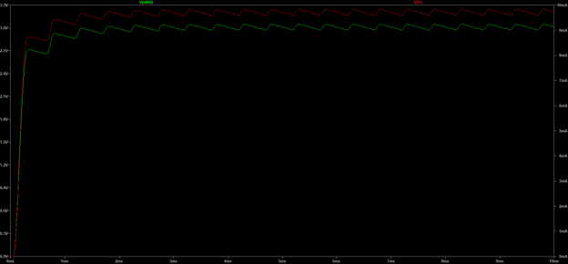

Projects / PROJ-2EI4-PSU
Bridge-Rectifier DC Power Supply
1.0Overview & Specification
The goal: deliver a 3 V DC output at 10 mA from a 120 V, 1 kHz AC source, with 0.2V ripple while keeping every component inside its power rating. The design chain is a transformer to step the source down, a bridge rectifier to make the waveform unipolar, and a capacitive filter to smooth what is left. Values were hand calculated and confirmed through simulation and prototyping.
| Source | 120 V, 1 kHz AC |
|---|---|
| Output voltage | 3 V DC |
| Output current | 10 mA |
| Ripple budget | 0.2 V peak-to-peak |
2.0Topology Selection
A full-wave bridge rectifier was chosen over half-wave and center-tapped alternatives. It costs four diodes instead of one or two, but it rectifies both half-cycles, doubling the ripple frequency to 2 kHz and halving the capacitor's discharge time between peaks. For the same filter capacitance that means substantially less ripple, No regulator was used; the filter alone carries the ripple spec.

3.0Hand Design
The component values fall out of working backwards from the output spec:
- Peak rectified voltage. With VO = Vp − VR/2 and a 0.2 V ripple around a 3 V average, Vp = 3 + 0.1 = 3.1 V.
- Input amplitude. Two diodes conduct in series on each half-cycle. Using the 0.7 V constant-drop model, Vm = 3.1 + 2(0.7) = 4.5 V.
- Filter capacitor. C = IL/(f·VR) = 10 mA / (1 kHz × 0.2 V) = 50 µF.
- Load resistor. R = Vp/(Vr·f·C) = 3.1 V / (0.2 V × 1 kHz × 50 µF) = 310 Ω.
- Turns ratio. 4.5 V = 120 V · (N2/N1), so N1:N2 = 80:3.
Two substitutions were made between paper and bench. Simulation showed the real diode drop exceeds 0.7 V at ~10 mA, so the source amplitude was raised to 4.65 V to recover the lost headroom. And on component availability, the built circuit used a 100 µF capacitor and a 300 Ω resistor, with 50 µF / 310 Ω retained for the calculations and simulation.
4.0Simulation
A 10 ms transient simulation in LTSpice (1N4148 diodes, SINE(0 4.65 1000) source) confirmed the design. Cursor measurements on the settled waveform gave an output swinging between 2.977 V and 3.048 V — a 71.6 mV ripple, inside the 0.2 V budget — with load current between 9.60 mA and 9.83 mA at the 2.45 kHz ripple frequency characteristic of full-wave rectification.

| Metric | Minimum | Maximum |
|---|---|---|
| Output voltage | 2.977 V | 3.048 V |
| Load current | 9.602 mA | 9.833 mA |
| Ripple frequency | 2.45 kHz | |
5.0Hardware Verification
The circuit was built on a breadboard and measured with the AD3. Channel 1 was placed across the load resistor for output voltage; a WaveForms math channel divided that trace by 300 Ω (the resistance actually installed) to read load current directly.
| Metric | Spec | Simulated | Measured |
|---|---|---|---|
| Output voltage | 3 V | 2.98 – 3.05 V | 2.69 – 2.77 V |
| Ripple (pk-pk) | < 0.2 V | 71.6 mV | 80 mV |
| Output current | 10 mA | 9.6 – 9.8 mA | 9.1 mA avg |
| Ripple frequency | 2 kHz | 2.45 kHz | 2 kHz |
6.0Discussion
Theory, simulation, and hardware agree in shape and largely in magnitude; the ripple spec is met in all three. The output voltage landed ~0.3 V low on hardware, and the causes are the ones the ideal model deliberately ignores: diode drops that grow with current beyond the 0.7 V assumption, series resistance in the wires and breadboard contacts, and component tolerances on the resistor and capacitor. Measurement itself contributes — AD3 resolution and connection noise both show up in the trace.
One bench issue was worth recording: the output voltage fluctuated irregularly during early measurements. Systematic checking traced it to a loose wire connection, and the reading was stable once reseated.
Design tradeoff
The bridge topology costs four diodes and two forward drops per half-cycle instead of one, which is costly at a 3 V output, where 1.4 V of the input amplitude is spent on the diodes. It buys 2× the ripple frequency and a proportionally smaller filter capacitor for the same ripple. At this spec the ripple budget is the binding constraint, so the extra components and headroom are the right thing to spend.